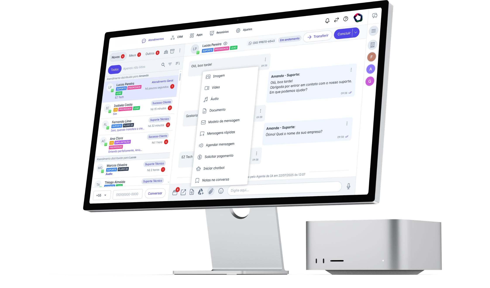
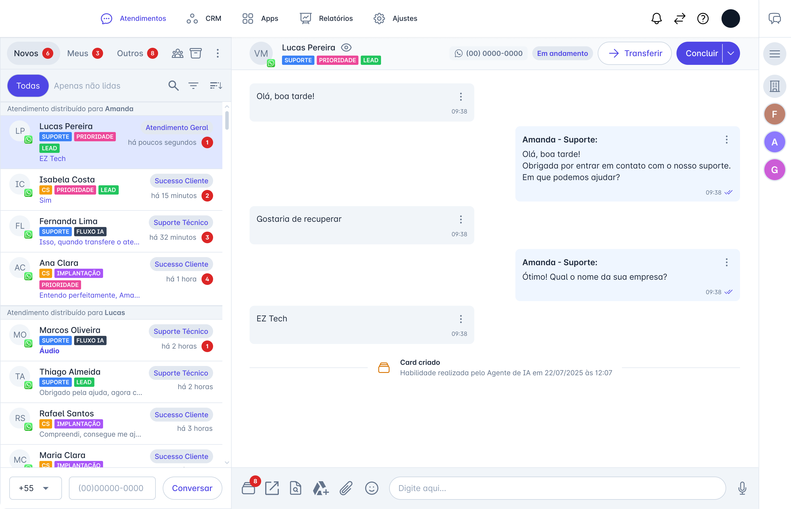
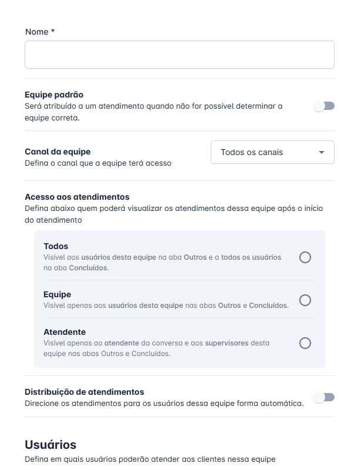
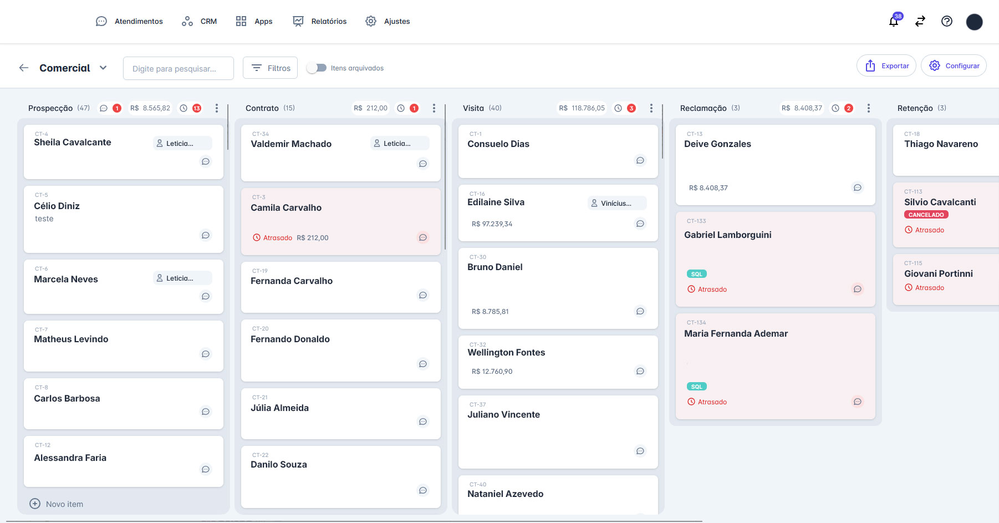
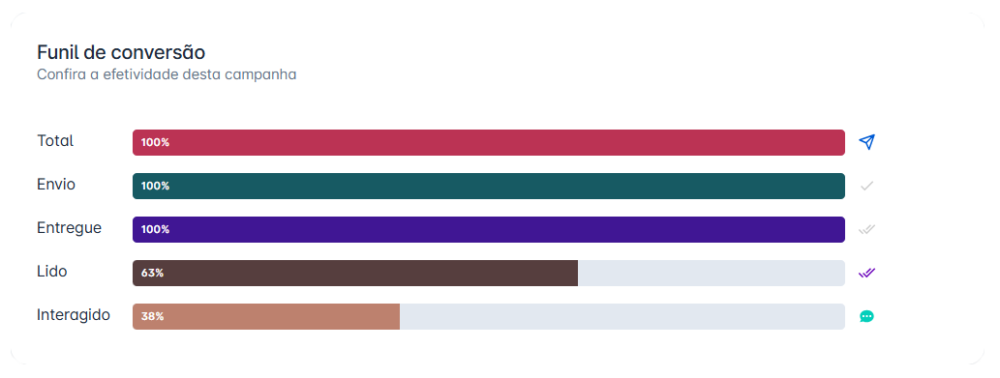
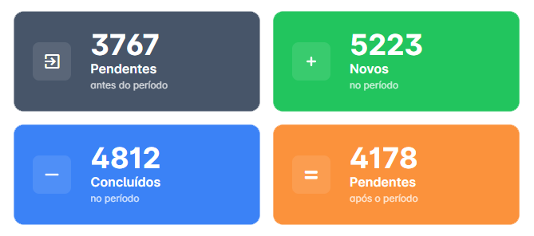

Sua clínica atende.
O Aios agenda.
CRM, agente IA e gestor humano dedicado para clínicas brasileiras. O Aios responde, qualifica e agenda cada paciente que chega no seu WhatsApp, 24 horas por dia.

Cada paciente que some
no WhatsApp já comprou
de alguém.
Não é falta de paciente. É falta de resposta. Enquanto sua recepção liga, agenda, lembra, atende presencial e ainda tenta voltar pro WhatsApp, três outras clínicas já fecharam a consulta que era sua.
Uma hora de demora no WhatsApp e o paciente já escolheu o concorrente.
Lead frio depois de 60 minutos tem 60% menos chance de fechar, sua recepção atende em quanto tempo, hoje?
Em média por mês, deixados na mesa por lead frio.
Cálculo simples: ticket médio R$ 1.840 × 17,6 leads perdidos / mês na clínica brasileira média de 1 a 3 médicos.
Das mensagens de sábado e domingo são respondidas.
E é justamente fim de semana que o paciente pesquisa preço, agenda particular, fecha estética. Sua secretária dorme. O concorrente, não.
Tudo isso vira problema de software. E a gente resolve software.
Três produtos
em uma operação só.
A maioria das clínicas usa um sistema pra agenda, outro pra WhatsApp, outro pra anúncios, e ainda tenta amarrar tudo com uma secretária sobrecarregada. O Aios entrega o conjunto inteiro, software, IA e gente, trabalhando junto.
CRM com Kanban Automático
Inbox unificado, funil que se mexe sozinho, segmentação por etiqueta, campanhas via API Oficial WhatsApp, mensagens agendadas e rápidas. O sistema operacional da sua clínica.
- WhatsApp · agenda · CRM
- Dashboard em tempo real
- Atribuição Meta + Google
Agente IA personalizado
Treinado com seus protocolos, procedimentos, convênios e tabela de preços. Responde em segundos, qualifica o paciente, agenda na sua agenda e devolve para humano quando precisa.
- Resposta < 1 segundo · 24/7
- Triagem clínica + sumarização
- Handoff inteligente para secretária
Gestor de CRM + Desenvolvimento + Especialistas em IA
Não é só ferramenta. Um gestor humano dedicado opera o seu CRM, nosso squad de devs codifica integrações sob medida, e especialistas em IA ajustam o agente da sua clínica continuamente.
- Cadência SEG · QUA · SEX
- Integrações em dias, não meses
- IA treinada com seus protocolos
Seu novo recepcionista que nunca dorme.
Esqueça a fila de espera no WhatsApp. A inteligência artificial responde instantaneamente, filtra curiosos, entende a necessidade médica e envia o link direto para pagamento ou agendamento na sua agenda.
Resposta em < 1 segundo
O paciente enviou oi, a IA apresenta a clínica imediatamente.
Aprende seus protocolos
Treinada com seu FAQ, valores, procedimentos e regras da clínica.
Qualifica e Agenda
Extrai dados estruturados (convênio, sintomas) e move para o funil.
Handoff Inteligente
Se a IA trava numa exceção médica, ela notifica a secretária humana.

Seu Gestor de CRM dedicado.
Um profissional interno nosso, totalmente dedicado à sua clínica. Configura, monitora, otimiza e gera relatórios para sua equipe só precisar atender o paciente.
- SEG Planejamento e setup de campanhas na base.
- QUA Otimização fina (ajuste de prompts da IA).
- SEX Relatório executivo entregue no WhatsApp.
- 24/7 Monitoramento ativo de quedas ou gaps.
Execução Rápida
Seu time pede a mudança, nosso gestor aperta os botões no CRM.
Relatórios Limpos
Métricas de agendamento traduzidas para a linguagem do médico.
Seu gestor opera o painel real do Aios, não um chat genérico.
Criação de equipes, atribuição de roles, configuração de campanhas, ajuste de prompts da IA. Tudo o que sua clínica precisa, executado por quem entende a ferramenta de cabo a rabo.


Cada paciente, em uma etapa visível.
Prospecção, Contrato, Visita, Retenção. O Kanban mostra onde cada lead está parado, e o gestor age antes da agenda esfriar. Ticket médio, valor parado, dias em atraso, tudo em uma tela.
Liga no seu sistema.
Não substitui.
O Aios entra como uma camada por cima do seu prontuário, da sua agenda e do seu faturamento. Tudo que já está rodando continua igual. O Aios só faz o que faltava.
Seu sistema não está na lista? Nosso time de Desenvolvimento constrói a ponte em 2 a 4 semanas, sem custo extra no plano Multi-Unidade.
Pedir integração custom
Não é só software.
É um time especializado
dentro da sua clínica.
Você não compra uma ferramenta solta. Contrata três especialistas que operam como extensão da sua equipe, sem fricção de contratação, sem CLT, sem treinamento. Gestor de CRM, Desenvolvimento e especialistas em IA dentro da assinatura.
Gestor de CRM Humano
Um profissional interno nosso, dedicado à sua clínica. Configura, monitora, otimiza e gera relatórios. Sua equipe só precisa atender o paciente.
Time de Desenvolvimento
Precisa de uma integração que ainda não existe? Nosso squad codifica em dias, não meses. Já conectamos Feegow, iClinic, Memed, ERPs hospitalares e até planilhas legacy.
Especialistas em IA
Não vendemos chatbot genérico. Treinamos a IA com SEUS protocolos clínicos, sua tabela de procedimentos, seus convênios. Cada agente é construído sob medida.
Agentes treinados, integrados, operando.
Cada agente é configurado pelos nossos especialistas com o protocolo da sua especialidade. Não é prompt genérico. É IA que conhece sua tabela, seus convênios, suas regras de triagem. Vendedor, atendente, suporte: um agente para cada papel.

Rastreie cada centavo,
do anúncio à consulta.
Não acreditamos em prova social maquiada. Mostramos o painel real e o que um diretor médico, que opera 3 unidades, falou depois de 90 dias.


Antes do Aios, torrávamos R$ 15 mil em Ads por mês, as leads entravam e a recepção demorava 4h pra responder. O paciente já tinha agendado no concorrente. Hoje, no segundo que o cara clica no anúncio, o robô atende e qualifica. Zeramos o gargalo.
"Em 60 dias o no-show caiu de 41% pra 11%. O lembrete da véspera fez o que minha secretária não conseguia."
"A IA recuperou 24 pacientes da carteira inativa em um trimestre. Receita que tava parada e ninguém olhava."
"Os disparos de aniversário pagaram o Aios sozinhos no primeiro mês. Triplicaram os agendamentos de toxina."
Sua clínica hoje vs.
sua clínica no Aios.
Não é sobre tecnologia. É sobre quanto você está deixando na mesa hoje. Faz as contas: secretária, anúncios sem rastreio, leads perdidos, no-show, retornos que não acontecem.
-
Recepção atende até as 18h14% das mensagens de fim de semana são respondidas.
-
Agenda com 32% de buracosNo-show entre 28-45% nas especialidades particulares.
-
R$ 15 mil em Ads sem rastreioVocê sabe qual campanha trouxe consulta. Mas não sabe qual fechou.
-
Carteira inativa esquecidaPacientes que sumiram há 6+ meses ficam num CRM que ninguém abre.
-
Secretária no limiteAtende, agenda, lembra, fatura, lida com convênio, e WhatsApp acumula.
-
IA responde em < 1 segundo, 24/7Sábado, domingo, madrugada, feriado. Sempre.
-
Agenda 89% ocupadaLembretes anti no-show D-1 + D-4h reduzem faltas em 68%.
-
ROI por campanha em tempo realSabe exatamente qual anúncio do Instagram fechou tratamento de R$ 8 mil.
-
Carteira inativa virando consultaDisparos de recall trazem 18-24 pacientes/trimestre pra clínica média.
-
Secretária focada em atender presencialA IA filtra os curiosos. Sua equipe só vê paciente qualificado.
Números baseados em médias reais de clínicas operando há 6+ meses · calculado por especialidade no diagnóstico gratuito
Antes que você
pergunte.
Toda clínica passa pelas mesmas dúvidas antes de assinar. A gente já ouviu, e responde direto, sem rodeio comercial.
"Meu paciente vai sentir que é robô?"
A IA é treinada com a linguagem da sua clínica e se apresenta como secretária virtual da [Nome da Clínica]. Nos testes às cegas, 73% dos pacientes não percebem que não é humano. E quando a IA detecta dúvida fora do escopo, ela passa pra humano automaticamente, sem fazer o paciente repetir nada.
"E quando a IA não souber responder?"
Handoff inteligente. A IA detecta exceções clínicas (sintomas graves, perguntas técnicas fora da especialidade, paciente irritado) e transfere pra sua secretária ou médico de plantão imediatamente, com o contexto completo da conversa já resumido.
"LGPD? Dados clínicos sensíveis?"
Servidores no Brasil, criptografia em trânsito e em repouso, DPO designado, contratos com cláusula de operador de dados, logs de auditoria por usuário. Já passamos por due diligence de hospitais e operadoras, podemos compartilhar o termo de adequação na primeira call.
"Já uso Feegow / iClinic / Doctoralia. Vai brigar?"
Não, integra. Tier 1 (Feegow, iClinic, Clínica nas Nuvens, Consultório Live, Clinicorp, Ninsaúde) é nativo via API aberta. Tier 2 (Memed, Doctoralia, ByDoctor, Shosp) é via parceria homologada. Se o seu sistema não tá nessa lista, nosso time de Desenvolvimento constrói a ponte em 2 a 4 semanas.
"Quanto tempo até funcionar de verdade?"
48h pro onboarding técnico (conexão WhatsApp, importação da base, treinamento inicial da IA). 7 a 14 dias pra atingir performance plena, com seu Gestor de CRM dedicado calibrando o agente nas duas primeiras semanas. Resultado mensurável já no primeiro fechamento mensal.
"E se eu não gostar?"
30 dias de teste com risco zero. Não gostou, não converteu, achou que não era pra sua clínica? Devolvemos integral. Sem fidelidade, sem multa, sem letra miúda. A gente prefere clínica feliz que cliente preso.
Ainda tem dúvida? Cole no WhatsApp da nossa secretária IA, ela mesma responde.
Perguntar pra IA do Aios
Agenda cheia,
todos os meses.
Cada lead ignorado é uma cadeira vazia amanhã.
Marque um diagnóstico gratuito. Em 30 minutos, mostramos o que está vazando da sua agenda e quanto disso o Aios fecha.